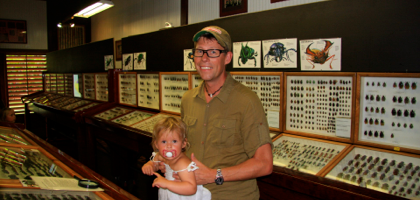
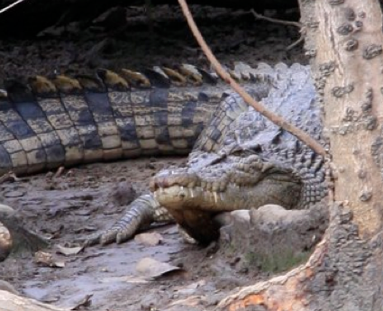
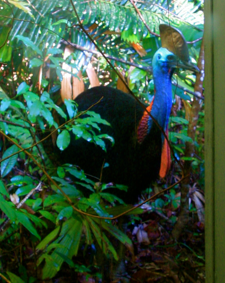

På tur med Martin

fredag den 30. november 2007

Da vi ikke kan komme med på nogen ture fra hotellet, har vi allieret os med Martin, en ældre herre, der kører shuttlebus til og fra byen. Vi spiser morgenmad og hygger bagefter på stranden, som sædvanlig er vi helt alene. Ungerne får lov til smide tøjet og plaske i havet. Vi har mødt et australsk par, der har badet i 10 dage uden at se stingers, så vi tør godt på det lave vand. Vi tegner en hel by i sandet med benzintank, skole og isbutik - dejlig leg.

Kl. 13.30 er der afgang til krokodilletur på Coopers Creek. Vi er heldige, vi ser 3 saltvandkrokodilledamer i mangroverne. Det er jo et meget roligt dyr, så der er god tid til at iagttage dette mageløse dyr, der er fredet i Australien. Hun krokodillerne har et territorium på ca. 1.5 kilometer flodbred, som de vogter nidkært over. Saltvandkrokodillerne kan blive op til 8,7 meter lange. Dem vi ser er dog kun ca. 3 meter.
Herefter skal vi på insektmuseum. Museet er oprettet af en meget ivrig samler, men det ligger helt uden for lands lov og ret, og har derfor ikke så mange besøgende, men vi støder da på et par danskere ... Vi får lov at se nogle meget specielle dyr, som vi ikke kan huske navnene på, men de ligner fuldstændig visnede blade, når de sidder på planterne. Vi ser også de største natsværmere i verden, de lever i North Queensland men kun i 72 timer hvorefter de dør. Vi ser på levende sommerfugle og fodrer fisk i den klare flod. Jeg får som den heldige lov til at slikke en grøn myre på rumpen. Aboriginals bruger myrerne til at lave juice af, der kan kurere forkølelse. Myren smager, hvis I er nysgerrige, meget bittert.
Videre til badning i en creek - forhåbentlig uden krokodiller. Det er dejlig afsvalende, specielt sammen med en kold øl.

Sidste stop på ruten er en botanisk vandretur, hvor vi kigger nærmere på de spændende planter i regnskoven. Dyr og planter i Australien har fået lov til at passe sig selv i mange tusinde år, da kontinentet løsrev sig fra Asien. Det gør, at vi her kan se dyr og planter, der ikke eksisterer andre steder på kloden. Bla. ser vi en Cassowary fra vores badeværelsesvindue på hotellet.
Efter 5 timer spiser vi en pizza og styrer mod sengene. I morgen er det tilbage til civilisationen. Internet, mobiltelefon og vaskemaskine. Og jeg skal lave mad - jeg glæder mig !
På et meget fint insektmuseum langt ude i den australske regnskov.